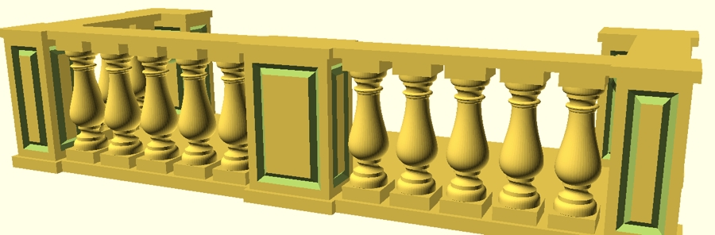

The video
Writing cookie cutters made me explore Bézier curves, and since I was unsatisfied with the OpenSCAD code I found online, I wrote my own and made a tutorial video.
In this article, I describe the same things as in the video, you have the choice whether you want to watch or read.
The code from the video can be found in this repository in the folder 'teaching examples'.
It is a curve ... and we'll calculate points
Essentially, a Bézier curve is a curve described by a couple of points and a formula, and is used in computer graphics, for instance typography. In case of a cookie cutter, I use it to model things that are curvy but not exactly round like a circle or ellipse.
In mathematics, things can be infinite and curves can be perfectly smooth, but in computer graphics curvy things are approximated by points and tiny flat surfaces. This is why in the algorithms used, I calculate many points as the basis of what is going on.
Mathematical definition
The formula: p1 * [0...1] + p2 * [1...0]
In the (not very useful) case of a Bézier curve that is only defined by the end points and no middle-points that curve it, it could be calculated like this:
// two points
p1 = [5, 7.5];
p2 = [7, 2];
// how many points will be calculated
n = 15;
// calculating points between p1 and p2
for (i = [0 : 1/n : 1])
translate( p1 * i + p2 * (1-i) )
sphere(0.2);
// displaying the end points
for (i = [p1, p2]) translate(i)
color("black") sphere(0.2);
Please copy the code into OpenSCAD to watch it rendered.
... used recursively
If a third point gets added and the curve gets curvy, the formula 'p1 * [0...1] + p2 * [1...0]' gets called recursively.
p1 = [5, 7.5];
p2 = [7, 2];
p3 = [1, 1.7];
n = 15;
// a Bézier curve [p1, p2, p3]
for (i = [0 : 1/n : 1])
translate(
(p1 * i + p2 * (1-i)) * i
+ (p2 * i + p3 * (1-i)) * (1-i) )
sphere(0.2);
for (i = [p1, p2, p3]) translate(i)
color("black") sphere(0.2);
The production code ...
For easier copy-pasting, the code is displayed in one go, and
commented below.
Please play with fs and the points to explore how it works.
// --- VARIABLES ---
// roughly the size of parts of curves
fs = 0.5;
// points
p1 = [5.5, 0];
p2 = [1.5, 0];
p3 = [0, 2];
p4 = [0, 7];
// --- FUNCTIONS AND MODULES ---
// calculates the amount of points
// from distance of two points and fs
function fn(a, b) =
round(sqrt(pow(a[0]-b[0],2)
+ pow(a[1]-b[1], 2))/fs);
// calculate each individual point
function b_pts(pts, n, idx) =
len(pts)>2 ?
b_pts([for(i=[0:len(pts)-2])
pts[i]], n, idx) * n*idx
+ b_pts([for(i=[1:len(pts)-1])
pts[i]], n, idx) * (1-n*idx)
: pts[0] * n*idx
+ pts[1] * (1-n*idx);
// calculate fn() for given points,
// call b_pts() and concatenate points
function b_curv(pts) =
let (fn=fn(pts[0], pts[len(pts)-1]))
[for (i= [0:fn])
concat(b_pts(pts, 1/fn, i))];
// displaying points as a rainbow
module rainbow (points) {
for (i= [0 : len(points)-1 ])
color([cos(20*i)/2+0.5,
-sin(20*i)/2+0.5,
-cos(20*i)/2+0.5,
1])
translate(points[i]) sphere(0.5, $fn=10);
}
// --- THE ACTUAL MODEL ---
// calculating the points
points = b_curv([p1, p2, p3, p4]);
// displaying the calculated points
rainbow(points);
// displaying [p1 .. p4]
for (i=[p1, p2, p3, p4])
translate(i) color("black")
cylinder(1, 0.2, 0.2, $fn=10);
... commented
fs
Unlike 'n' in the section before, we will work with a number of points that is calculated from the first and last point of the curve, and a variable fs, which works roughly like $fs, it says how large approximately the distance between the calculated points shall be.
Recursive functions are expensive in computing power and, depending what you do with it, OpenSCAD is already slow. The point of fs being a global variable here is that you can use a 'larger' number during most of the production and calculate a finely grained model only when you need it.
As you can tell from the rendered file, the distance of the points is not perfectly even, but usually good enough, after all we are behind the curve and not the points.
function fn( )
fn( ) calculates a number, which will be the number of the points of a curve, from the distance of two points and fs.
functions b_pts( ) and b_curv( )
In the production code, I split the points-calculating mechanism into two functions, where b_pts( ) is the same regardless of what the model does and b_curv( ) can vary, depending on what I plan to do with the Bézier curve. Furthermore I find it, with this separation, easier to read and maintain.
b_pts( ) contains the recursive mechanism and returns a number. It is
called for each point separately. It is called with an array of points
'pts', a number in how many points the curve will be calculated 'n',
and a number which of the points will be calculated 'idx'.
It asks: 'Am I given more than two points in the array 'pts'?' And if
yes, it calls itself for the first to the second-last point multiplied
by n*idx and adds calling itself for the second to the last point,
multiplied with 1-n*idx.
If the number of points in the array is two, it does the familiar
'p1 * [0...1] + p2 * [1...0]' thing.
In b_curv( ), which is called with an array of points 'pts', the calculation of the points is organized. It calls fn( ) with the first and last point in 'pts' to get the variable fn. And then from zero to fn, it calls b_pts( ) in order to calculate each point, and concatenates them.
If the item modeled it a cookie-cutter, I already use b_curv as a module to build shapes.
rainbow ( )
The module 'rainbow ( )' receives an array of points and displays them in a colorful manner so they are visible and provide a sense how they are ordered in the array. The module has its own place on GitHub.
Choosing locations for points
The most commonly used amount of points is four, this is also called 'cubic curve'. The first and the last point are the both ends of the curve and the points between make the curve curvy.
When a Bézier curve starts at one side, it first starts going towards the second point and then the influence of the third point grows stronger and so on. If differential calculus feels familiar to you, think of it as that the derivative function at the start of the curve points towards the second point.
And this is why, in typography, the start and end points of the curves are commonly set at
- the pointy ends of the letter and
- the most right, left, top and bottom points of a curvy shape.
This can be observed in the image of the letter d, where the red dots are the starts and ends of the curves and the black dots are the points in-between.
Take a look at the bottom left curve of the letter d, between points 10 and 13. Notice that all four point are either on the x or the y axis. And now take a look at the two adjacent curves, 7-10 and 13-16. You'll notice that point 9 is located on the x axis as well and point 14 n the y-axis. Having point 9, 10 and 11 in one axis provides a smooth curve around point 10, and the easiest way to make that happen is locating all of them with the same y-value (0). Similarly, the continuous nature of the curve around point 13 ensures by points 12, 13 and 14 all having the same x-value (0).
Other applications
Bézier curves can be used for many things, for instance I made a balustrade balcony in OpenSCAD using Bézier curves, and it holds chalk for a blackboard now.
Live coding video
After the first, conceptual video, I made a second video with live-coding of a cactus-shaped cookis cutter.
Further readings
Text last updated: April 7th, 2021